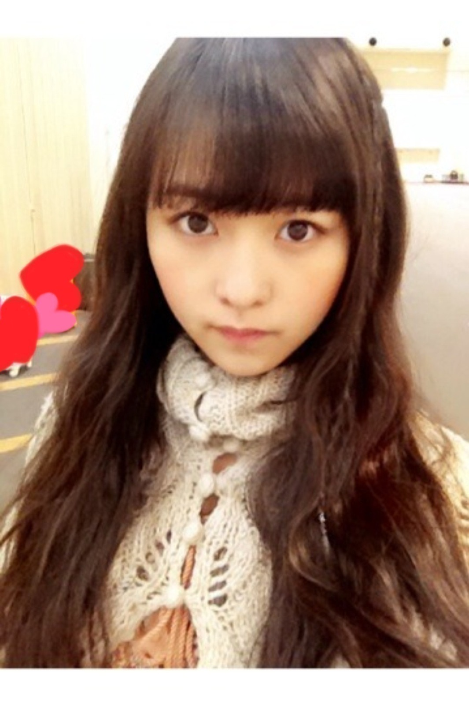

| 2013/12 30 Mon | 色褪せたベティちゃ ん。531回目 |
京都で2日連続の握手会がありました。
来てくださったみなさん
ありがとうございました！
◇全国握手会
ひなちまとらりんとの3人のレーンの
予定でしたが急遽変わって
らりんとのレーンとなりました。

6thでもペアになったことあったから
らりん一家の方とも久しぶりに
お会いできて嬉しかったです。
握手してるときにちょっかい
出してくるらりんがめんどくさい←
そんなところもすきだけど

7thの最後の全握でした。
あっという間。
少し寂しかったなー
◇個別握手会

1部 ウェーブ巻きと三つ編み
2部 ゆるサイドポニー
3部 サイドお団子

ポンチョだよポンチョ
毛が生えた靴履いたよ。
はじめましての方が
たくさん来てくれました。
まりっ会の方が
増えてきている気がします。
ありがたいです。
雪降る中、足を運んでいただき
ありがとうございました。
ゆっくりお風呂につかってください。
風邪ひかないでくださいね！
.........
生駒ちゃんお誕生日おめでとう！
あーー18歳になっちゃったー
先に抜かされちゃったーーー

なかなかのポーズ笑
生駒はメンバーの中でいちばん
オンオフスイッチがある。
いつも先頭に立って、
がんばってくれてありがとう。
......
26日に発売された装苑に
おじゃましました。
母が昔から読んでいた影響で、
いつからか読むようになっていた装苑。
勉強になることばっかりで
私にとって教科書なのです。
愛読していたので
載られるなんて夢みたいです。
夢か、夢かこれは

衣装の秘密が載っているので
ぜひ見てください！
もうすぐ年があけるよー
あーーー落ち着かん
掃除しよう
まりか
コメント(425)
2013/12/30 00:06